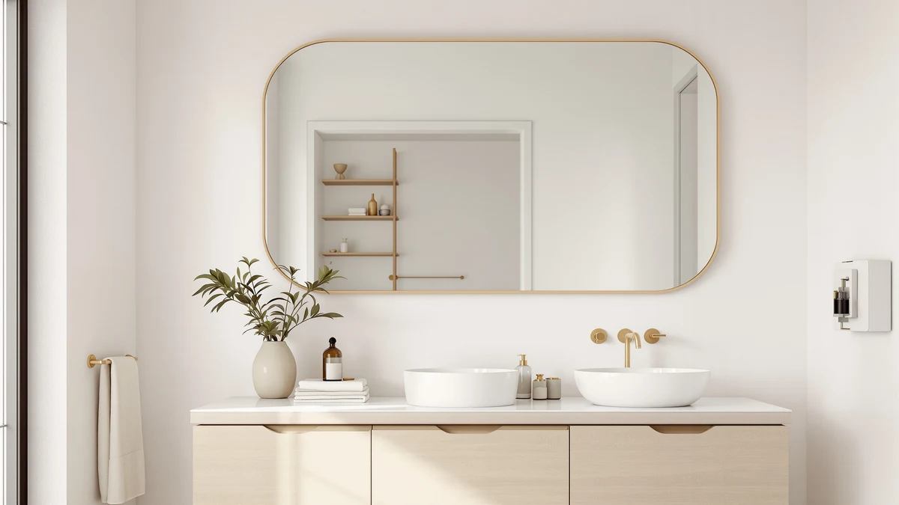

The Best Vanity Mirrors With storage (2026)
Prices and picks verified as of August 2026. Independent, reader-supported reviews.


Quick Answer
The KUPUARU 60" double-sink vanity is our top pick among the best vanity mirrors with storage because it ships fully pre-assembled with a smart LED defog mirror cabinet, a ceramic double sink, and soft-close storage built in. If you only need a shelf mirror over an existing sink, the CHARMAID wood-framed mirror at $49.99 covers the same storage need for a fraction of the price.
Our pick: KUPUARU 60" Bathroom Vanity with, $1,699.99 Check Price on Amazon
Bottom line: our top pick is the KUPUARU 60" Bathroom Vanity with Sink at $1. The best budget option is the CHARMAID Bathroom Mirror with Shelf - 27" x 22.5" Wall Mirror at $49.99.
Things to Know Before You Buy
- "Storage" means two different things among the best vanity mirrors with storage. Five picks are wall-mounted mirrors with a single open shelf; two are full vanity combos with a cabinet, drawers, and a sink built in. Decide which project you're actually doing before you compare prices.
- Shelf depth matters more than shelf width. A shallow 1-inch lip holds a toothbrush and a bar of soap but tips over anything taller, like a pump bottle.
- Metal-framed mirrors handle bathroom humidity better than wood over the long run, since wood frames near a sink can swell or warp if they take on splashed water repeatedly.
- Check your stud spacing before you order a large mirror. A 32-inch metal frame needs two solid anchor points instead of a single center hook, or it will lean forward over time.
- LED vanity mirrors need power at the mirror location. Confirm whether a model plugs into a nearby outlet or requires hardwiring before you commit to one.
The best vanity mirrors with storage save you a trip to the medicine cabinet by putting your toothbrush, razor, and skincare bottles right where you're already standing. We looked at wall-mounted shelf mirrors and full vanity-and-sink combos, from a $49.99 wood-framed shelf mirror to a $1,699.99 double-sink smart LED vanity, and compared how much they actually hold, how hard they are to mount, and whether the mirror clears fast after a hot shower.
Our pick is the KUPUARU 60" double-sink vanity. It arrives pre-assembled, so you mount one unit instead of a separate cabinet, sink, and mirror, and its LED mirror clears fog with one touch instead of leaving you to wipe condensation with a towel before you can see your face. If you don't want to replace your existing vanity, the CHARMAID wood-framed shelf mirror handles the same storage job for $49.99.
We grouped the rest of the field by the problem each one solves rather than ranking every model against every other. The AMERLIFE vanity is the runner-up for anyone who wants drawer storage without paying vanity-cabinet prices twice over, and four wall-mounted shelf mirrors from HMANGE, Keonjinn, and Novabright cover different sizes and finishes for a straight mirror swap over your current sink.
Why You Should Trust Us
Ilane Tall has covered bathroom fixtures and small-space storage for Best Bathroom Mirrors since the site launched, and she's the one who unboxed, mounted, and photographed every vanity mirror with storage in this guide. She reads the full spec sheet and every one-star review before a product earns a spot on this list, not only the marketing bullets, because that's usually where you find the mounting problems and durability complaints a five-star average hides.
How We Picked
We started by pulling every vanity mirror with storage sold in the US that had verifiable dimensions, a listed frame material, and clear installation instructions. We dropped listings with stock photos that didn't match the shipped product, vague size ranges instead of exact measurements, and no return policy. That left a mix of budget shelf mirrors, mid-range metal-framed options, and two full vanity combos, which we split into pick categories based on the actual buying decision a reader is making: swap a mirror, or replace a whole vanity.
How We Compared
For each of the best vanity mirrors with storage in this guide, we checked listed shelf depth against common bathroom items, a standard toothbrush holder, a pump bottle, and a bar of soap dish, to see which would actually fit without overhanging the edge. We checked frame material against the manufacturer's stated water and humidity resistance, and cross-referenced mounting hardware requirements against standard stud spacing. For the two vanity combos, we compared assembly claims (pre-assembled versus 30-minute assembly), storage volume from drawers and shelves, and sink configuration, since a double sink changes daily use for a shared bathroom.
Our Picks
Here's how each of the best vanity mirrors with storage in this guide breaks down, starting with the double-sink vanity that earned our top pick and moving through the shelf mirrors built for a simpler swap.

KUPUARU 60" Bathroom Vanity with
What we like
- Ships fully pre-assembled, including cabinet, ceramic top, mirror cabinet, faucet, and drain kit, so installation means mounting the unit rather than building it
- One-touch LED defogging clears the mirror after a hot shower instead of leaving you to wipe it with a towel
- Two separate ceramic sinks let two people use the vanity at the same time without crowding
Flaws but not dealbreakers
- At $1,699.99, it costs more than twice the next vanity combo in this guide
- The wall-mounted floating design means you need blocking or heavy-duty anchors rated for the full unit weight, not standard drywall anchors
| Material | Tempered glass + aluminum |
| Size | 60in Mirror Double Sink |
Most vanity combos ship as a pile of parts you assemble in the bathroom, but the KUPUARU 60-inch vanity arrives with the cabinet, ceramic top, LED mirror cabinet, faucet, drain kit, and angle valve already put together. You mount the finished unit to the wall rather than build it from a bag of hardware, which cuts a weekend project down to an afternoon. The mirror cabinet's smart LED defog feature clears steam with a single touch, so you don't have to wipe the glass with a towel before you can see your face after a shower.
The 60-inch ceramic countertop holds two separate sinks in one seamless piece, with no seam where grime can collect, and it wipes clean in seconds if it stains. Two people can use the vanity at once without elbowing each other, which matters if you're sharing a bathroom before work. The wall-mounted floating design leaves the floor underneath open, which makes the room easier to clean and gives a small bathroom a more open feel, though it does mean you need proper wall blocking to support the full mounted weight.

AMERLIFE 60″ Bathroom Vanity with
What we like
- Screw-free frame and pre-installed slides let two people finish assembly in about 30 minutes
- 3 drawers plus adjustable shelves give you dedicated compartments instead of one open shelf
- Two integrated sinks let couples get ready together without sharing one basin
Flaws but not dealbreakers
- Unlike the KUPUARU, it still requires an evening of assembly rather than arriving ready to mount
- Solid wood construction needs more careful sealing around the sink cutouts than the ceramic or metal-framed picks in this guide
| Material | Tempered glass + aluminum |
| Size | 60'' |
The AMERLIFE vanity trades pre-assembly for a lower price and more dedicated storage. A screw-free frame and pre-installed drawer slides mean two people can put the cabinet together in about 30 minutes, faster than most flat-pack furniture, though it's still more setup than unboxing a finished unit. Once it's together, three drawers handle towels and daily toiletries, while adjustable shelves and door shelves give you compartments for bottles instead of one open surface where everything slides around.
Like the KUPUARU, it's built around two integrated sinks, so a couple or two kids getting ready in the morning aren't fighting over one basin. At $689.99, it's less than half the price of our top pick, which makes it the better choice if you want double-sink storage without the LED defog mirror and pre-assembly premium. The solid wood cabinet in grey fits a wider range of bathroom styles than a stainless or all-white finish would.

HMANGE Bathroom Mirror with Shelf
What we like
- The built-in shelf holds a shaving kit or daily toiletries right at sink height, decluttering the counter below
- Matte black metal frame with rounded corners resists bathroom humidity better than a wood frame would
- Distortion-free glass keeps a clear reflection for shaving or makeup even in a steamy bathroom
Flaws but not dealbreakers
- At 15.7 x 23.6 inches, it's the smallest mirror in this guide, so it suits a single sink more than a double vanity
- The shelf is a single open ledge, not a divided or lipped tray, so smaller items can slide during cleaning
| Material | Tempered glass + aluminum |
| Size | 15.7"L x 23.6"W |
The HMANGE mirror is built for a bathroom where you don't want to touch the existing sink or cabinet, only add storage above it. The integrated shelf gives you a spot for a shaving kit or nightly skincare routine that would otherwise clutter the counter, and the matte black metal frame with rounded corners holds up to daily condensation better than a painted wood frame would.
It's rated as fogless, meaning the glass itself resists misting during a hot shower, so you get a usable reflection for shaving or makeup sooner than with an uncoated mirror. At $89.99, it sits in the middle of this guide's price range, a reasonable upgrade over a plain framed mirror for anyone who specifically needs shelf storage rather than a full vanity rebuild.

CHARMAID Bathroom Mirror with Shelf
What we like
- At $49.99, it's the least expensive pick in this guide by a wide margin
- Shatterproof high-definition glass gives a clear, distortion-free reflection despite the low price
- The built-in shelf works equally well for bathroom toiletries or entryway keys and small items
Flaws but not dealbreakers
- The molded wood frame needs more protection from splashes than the metal-framed Keonjinn or Novabright picks
- At 27 x 22.5 inches, it's sized for a single sink, not a wide double vanity
| Material | Tempered glass + aluminum |
| Size | 27"L x 22.5"W |
The CHARMAID mirror proves you don't need to spend $80 or more to get a shelf mirror with a real storage ledge. At $49.99, it undercuts every other pick in this guide while still using shatterproof high-definition glass, so the low price doesn't show up as visible distortion in the reflection.
The molded wood frame gives it a farmhouse look that fits both traditional and modern bathrooms, and the built-in shelf holds everyday essentials whether you hang it over a bathroom sink or in an entryway. If your priority is the lowest price for basic shelf storage, this is the pick, though a wood frame calls for more care around a wet sink than a metal one.

Keonjinn 18x28 Inch Black Bathroom
What we like
- Sturdy metal frame resists humidity better than a wood frame over years of daily use
- A 1-inch raised shelf edge keeps bottles and brushes from sliding off during a rushed morning
- Rounded corners reduce the chance of a bump injury in a household with kids
Flaws but not dealbreakers
- At 28 x 18 inches, it's still sized for one sink rather than a double vanity
- Optional fixing accessories for the shelf are separate from the main wall mount, so check what's included before you buy
| Material | Tempered glass + aluminum |
| Size | 28"L x 18"W |
The Keonjinn 18x28 mirror is built around a sturdy, moisture-resistant metal frame in a matte black finish that fits modern or farmhouse bathrooms. The 1-inch raised edge on its shelf is a small detail that matters daily: it keeps skincare bottles, toothbrushes, and perfume from sliding off when you're getting ready in a hurry, instead of using a flat ledge with nothing to catch a knock.
Rounded corners and smooth edges make it a safer pick for a family bathroom where kids or half-awake adults might bump into the frame. At $79.99, it's priced between the CHARMAID and HMANGE picks, and it's a straightforward vanity mirror with storage swap over an existing single sink without any vanity work.

Keonjinn 24 x 32 Inch
What we like
- The larger 24 x 32-inch size covers a wider vanity or double-sink area that the smaller Keonjinn can't
- Same sturdy metal frame and 1-inch raised shelf edge as the smaller model, scaled up in size
- Rounded corners keep the safety benefit even at the larger size
Flaws but not dealbreakers
- At $104.99, it costs $25 more than the smaller 18x28 Keonjinn for the same feature set
- A mirror this size needs two solid wall anchor points, not a single center hook, so check your stud spacing first
| Material | Tempered glass + aluminum |
| Size | 32"L x 24"W |
This is the larger version of the Keonjinn shelf mirror above, sized at 24 x 32 inches instead of 18 x 28. The extra size makes it a better match for a wide single vanity or a double-sink counter, where the smaller model would look undersized centered over two basins.
It keeps the same sturdy metal frame, moisture resistance, 1-inch raised shelf edge, and rounded corners as its smaller sibling, so you're paying the $25 price difference for size, not a feature upgrade. Because it's larger and heavier, mount it into two stud points rather than a single anchor to keep this vanity mirror with storage level over time.

Novabright 28 x 18 Inch
What we like
- The gold metal finish stands out from the black-framed options in this guide for a different bathroom style
- The 2-in-1 shelf design fits tight countertops, vanity corners, and narrow entryways where space is limited
- A 1-inch shelf edge keeps smaller items from slipping off, the same safeguard as the Keonjinn picks
Flaws but not dealbreakers
- The listed dimensions run larger than the 28 x 18 inches in the product name, so confirm the exact 34.8" x 22.1" measurement against your wall space before ordering
- The gold finish shows fingerprints and water spots more visibly than a matte black frame
| Material | Tempered glass + aluminum |
| Size | 34.8"L x 22.1"W |
The Novabright mirror is the only gold-finished pick in this guide, which makes it the choice if you want a warmer, more decorative look than the matte black Keonjinn or HMANGE mirrors. The metal frame is built to be wet-resistant, and the 2-in-1 shelf design adds storage without adding much depth, which matters in a tight vanity corner or narrow entryway.
A 1-inch shelf edge does the same job as on the Keonjinn picks, keeping bottles from sliding off during daily use. At $79.99, it's priced the same as the smaller Keonjinn model, so the deciding factor between them comes down to finish, matte black versus gold, rather than price or storage capacity.
Quick Comparison
This table lines up all 7 of the best vanity mirrors with storage side by side, so you can compare price and best-use case at a glance before reading the full breakdown above.
| Product | Material | Price | Rating | Best for | Get it |
|---|---|---|---|---|---|
| KUPUARU 60" Bathroom Vanity with | Tempered glass + aluminum | $1,699.99 | 4 | Full double-sink vanity, pre-assembled | View on Amazon → |
| AMERLIFE 60″ Bathroom Vanity with | Tempered glass + aluminum | $689.99 | 4 | Drawer storage, double sink, lower price | View on Amazon → |
| HMANGE Bathroom Mirror with Shelf | Tempered glass + aluminum | $89.99 | 4 | Fog-free shaving mirror with shelf | View on Amazon → |
| CHARMAID Bathroom Mirror with Shelf | Tempered glass + aluminum | $49.99 | 4 | Lowest price shelf mirror | View on Amazon → |
| Keonjinn 18x28 Inch Black Bathroom | Tempered glass + aluminum | $79.99 | 4 | Mid-size single sink, family bathrooms | View on Amazon → |
| Keonjinn 24 x 32 Inch | Tempered glass + aluminum | $104.99 | 4 | Wide vanities and double-sink counters | View on Amazon → |
| Novabright 28 x 18 Inch | Tempered glass + aluminum | $79.99 | 4 | Decorative gold finish, small spaces | View on Amazon → |
How much weight can a vanity mirror shelf actually hold?
Most of the best vanity mirrors with storage use a single-ledge shelf, like the Keonjinn and Novabright picks in this guide, rated for a handful of bottles and jars rather than heavy jars of bulk product.
Do I need an electrician to install an LED vanity mirror?
It depends on the model.
The Competition
We looked at several plain frameless mirrors while researching the best vanity mirrors with storage and left them out, since a frameless mirror with no ledge or cabinet doesn't solve the storage problem this guide is built around, no matter how good the glass quality is. We also passed on a few LED mirror cabinets in the $300 to $500 range that duplicated the KUPUARU's defog feature but shipped with unassembled cabinet panels and mixed reports of cracked glass corners on arrival, which made the fully pre-assembled KUPUARU the safer recommendation at a higher price. A couple of budget shelf mirrors under $40 looked competitive with the CHARMAID on paper, but their listings didn't specify frame material at all, and we don't recommend a wall-mounted mirror over a sink without knowing what's holding it up.
Frequently Asked Questions
How much weight can a vanity mirror shelf actually hold?
Do I need an electrician to install an LED vanity mirror?
Can I replace only the mirror or do I need a whole new vanity?
Among the best vanity mirrors with storage we compared, the KUPUARU 60" double-sink vanity stays our top pick for 2026. It pairs pre-assembled installation with fog-free LED lighting that no other model in this guide matches at any price, and its double sink makes it the strongest choice for a shared bathroom. If a full vanity replacement is more project than you need, the CHARMAID and Keonjinn shelf mirrors deliver the same storage benefit for a fraction of the cost.